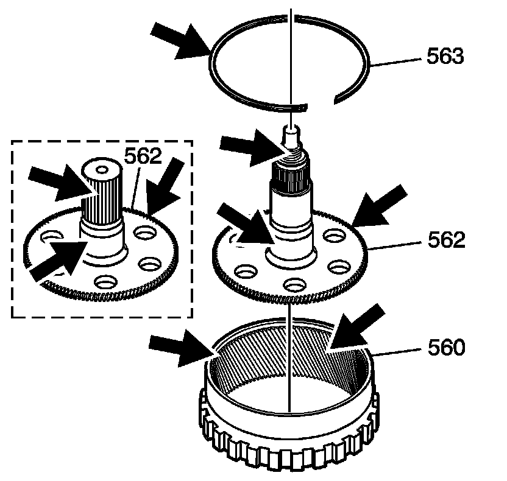
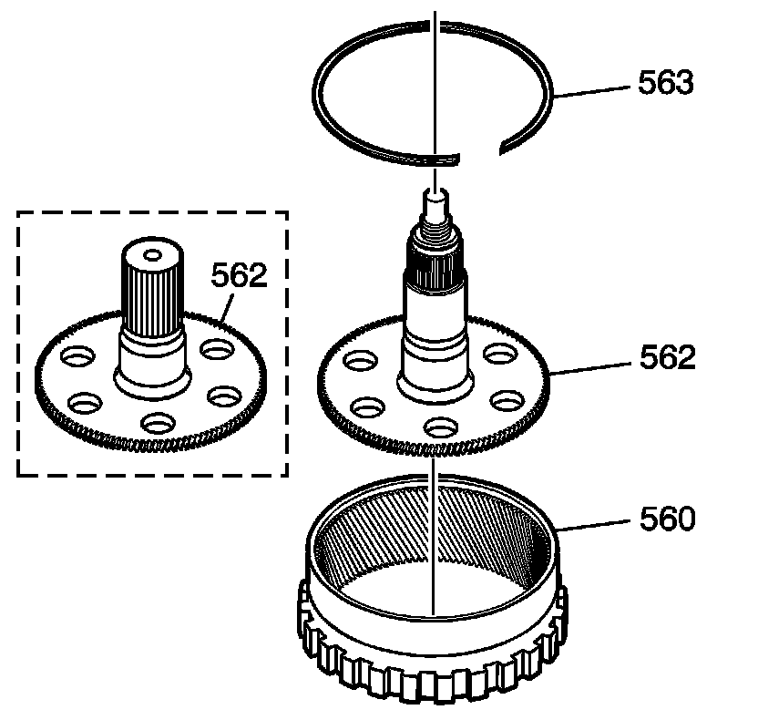
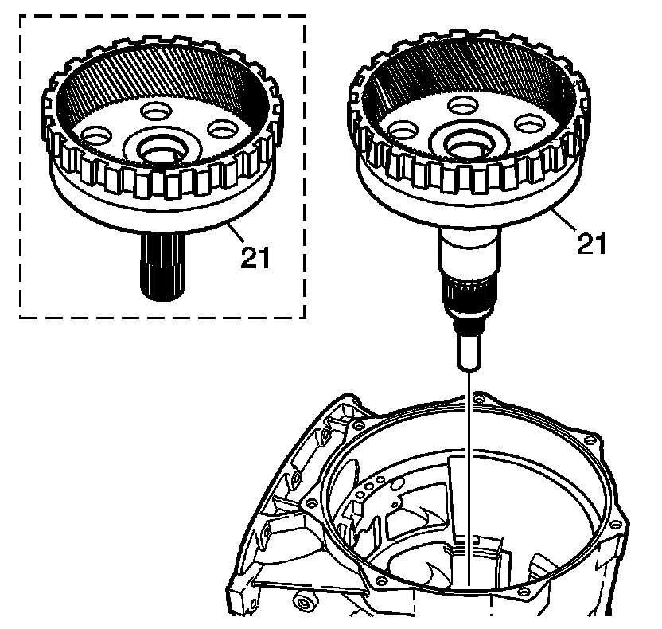

Output Shaft and Rear Internal Ring Gear Assemble
Output Shaft and Rear Internal Ring Gear Assemble

1. Inspect the output shaft (562) and the rear internal gear (560) for the following:
* Damaged or worn bushings
* Damaged splines
* Damaged or worn snap ring (563)
* Damaged or worn gear teeth
* Damaged or worn snap ring groove
* Damaged or cross-threaded threads
* Damaged or worn bearings

2. Install the output shaft (562) onto the rear internal gear (560).
3. Install the snap ring (563) onto the rear internal ring gear (560). Be sure it is seated in the groove.

4. Rotate the transmission 90 degrees.
5. Install the output shaft assembly (21) into the case.